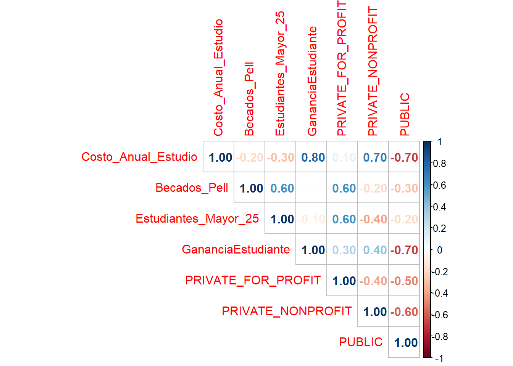
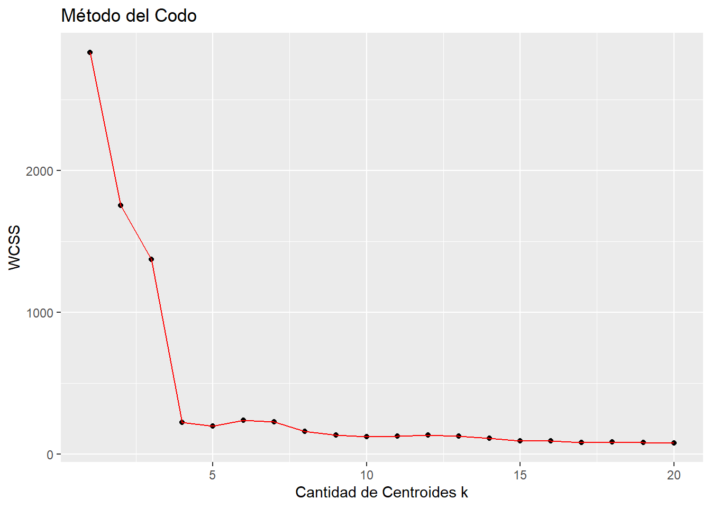

Análisis de las instituciones educativas de los Estados Unidos
1- Contexto del problema
En este trabajo se pretende abordar la problemática que presentan los usuarios cuando desean adquirir una educación universitaria: “¿Qué universidad escoger?”, “’¿Cuál se adapta mejor a mis requerimientos?”.
Para esto, se hara uso de una base de datos puesta a disposición para el público del Departamento de Educación de los Estados Unidos. El nombre del dataset es “CollegeScorecard.csv”, el cual fué publicado en el año 2016. Cada registro corresponde a la información de las diferentes instituciones educativas de dicho país. El dataset se compone de 7804 observaciones y 1725 variables como se observa en la Tabla 1.
El objetivo de este proyecto es segmentar la información del dataset, con el fin de poder identificar que instituciones comparten cierta similitud de acuerdo a las características con las que se van a utilizar. Para lograr nuestro objetivo, utilizaremos un trabajo realizado por Delgado (2018), en el cual hacen uso de librerias y metodologías que nos sirven de base para poder crear nuestro modelo, y también se hara uso de los conceptos aplicados en el trabajo realizado por Amat (2017), sobre “Clustering y heatmaps: aprendizaje no supervisado”.
Con la realización de este trabajo, se espera poder ayudar a los usuarios de Estados Unidos a poder seleccionar una institución de Educación Superior para estudiar, mostrando las características de los grupos que se identifiquen.
| Filas | Columnas |
|---|---|
| 7804 | 1725 |
2- Procesamiento de los datos
Para la depuración inicial de la base de datos se tomaron en cuenta las instituciones que están operando actualmente y que sean solamente presenciales. Luego seleccionamos las variables que queremos tomar en cuenta en nuestro estudio:
- Nombre de institución.
- Tipo_de_Entidad: Tipo de institución (Public, private nonprofit, private for-profit).
- Costo_Anual_Estudio: costo anual de estudio.
- Becados_Pell: porcentaje de estudiantes con beca “PELL”.
- Estudiantes_Mayor_25: porcentaje de estudiantes mayores a 25 años.
- GananciaEstudiante: Ganancia de la universidad por estudiante.
Luego, se procedió a revisar los valores nulos de las variables seleccionadas y se eliminaron.
Al realizar todo lo anterior, se obtiene la nueva dimención de los datos que se observa en la Tabla 2.
| Filas | Columnas |
|---|---|
| 3662 | 8 |
3- Normalización de las variables
Se normaliza la base de datos convirtiendo las variables categóricas en “dummies”, se normalizan las variables de tipo numérica para transformarlas a escala de [0,1], y se elimina la variable “Institucion” para poder crear el modelo de agrupamiento.
De esta forma se obtiene el dataset que se muestra en la Tabla 3.
| Costo_Anual_Estudio | Becados_Pell | Estudiantes_Mayor_25 | GananciaEstudiante | PRIVATE_FOR_PROFIT | PRIVATE_NONPROFIT | PUBLIC |
|---|---|---|---|---|---|---|
| 0.2094971 | 0.7028224 | 0.1044522 | 0.1470488 | 0 | 0 | 1 |
| 0.2251692 | 0.3309642 | 0.2418209 | 0.1465619 | 0 | 0 | 1 |
| 0.1158058 | 0.6743923 | 0.8539270 | 0.1956377 | 0 | 1 | 0 |
| 0.2296632 | 0.3078904 | 0.2636318 | 0.1350233 | 0 | 0 | 1 |
| 0.1883355 | 0.8212814 | 0.1265633 | 0.1267628 | 0 | 0 | 1 |
| 0.3208374 | 0.1869592 | 0.0848424 | 0.1979260 | 0 | 0 | 1 |
4- Correlación entre las variables
Se analiza el grado de correlación existente entre las variables con las que se esta trabajando, esto se puede ver en la Figura 1.

Se puede observar que la correlación mas significativa es entre las variables “Costo_Anual_Estudio” y “GananciaEstudiante” que tiene un valor de 0.80.
5- Modelo de agrupamiento
Para el proyecto, se utilizará el metodo K-Means. Para esto primero se utilizará el Método del Codo (Elbow Method) para poder identificar el número óptimo de clusters.

En la Gráfica 1, se puede observar que el número óptimo de clusters es 3, dicho valor sera empleado para el parámetro del modelo de agrupamiento. En la Tabla 4, podemos observar un resumen donde se observa el valor de la medía para cada variable numérica de acuerdo a cada grupo obtenido. Por otro lado, en la Tabla 5 podemos observar la cantidad por cada tipo de institución que hay en cada grupo.
| Clasificacion | Costo_Anual_Estudio | Becados_Pell | Estudiantes_Mayor_25 | GananciaEstudiante |
|---|---|---|---|---|
| 1 | 42620.83 | 0.3085801 | 0.1082840 | 17095.486 |
| 2 | 24964.62 | 0.5950951 | 0.4355617 | 10269.275 |
| 3 | 25754.29 | 0.6874821 | 0.6140875 | 14295.697 |
| 4 | 14654.35 | 0.4164590 | 0.3104235 | 3923.884 |
| Clasificacion | Tipo_de_Entidad | Cantidad |
|---|---|---|
| 1 | PRIVATE_NONPROFIT | 757 |
| 2 | PRIVATE_NONPROFIT | 491 |
| 3 | PRIVATE_FOR_PROFIT | 842 |
| 4 | PUBLIC | 1572 |
En las Tablas 6, 7, 8, 9 podemos ver un resumen mas detallado por cada grupo. En estos resumen se presentan datos estadísticos de las variables numéricas y las frecuencias de las variables categóricas.
| Tipo_de_Entidad | Costo_Anual_Estudio | Becados_Pell | Estudiantes_Mayor_25 | GananciaEstudiante | Clasificacion | |
|---|---|---|---|---|---|---|
| PRIVATE_FOR_PROFIT: 0 | Min. :13000 | Min. :0.0444 | Min. :0.0005 | Min. : 517 | Min. :1 | |
| PRIVATE_NONPROFIT :757 | 1st Qu.:35632 | 1st Qu.:0.2176 | 1st Qu.:0.0271 | 1st Qu.:12425 | 1st Qu.:1 | |
| PUBLIC : 0 | Median :41657 | Median :0.3080 | Median :0.0806 | Median :15929 | Median :1 | |
| NA | Mean :42621 | Mean :0.3086 | Mean :0.1083 | Mean :17095 | Mean :1 | |
| NA | 3rd Qu.:49303 | 3rd Qu.:0.3904 | 3rd Qu.:0.1646 | 3rd Qu.:20739 | 3rd Qu.:1 | |
| NA | Max. :64233 | Max. :0.7078 | Max. :0.5714 | Max. :52706 | Max. :1 |
| Tipo_de_Entidad | Costo_Anual_Estudio | Becados_Pell | Estudiantes_Mayor_25 | GananciaEstudiante | Clasificacion | |
|---|---|---|---|---|---|---|
| PRIVATE_FOR_PROFIT: 0 | Min. : 6753 | Min. :0.0292 | Min. :0.0045 | Min. : 41 | Min. :2 | |
| PRIVATE_NONPROFIT :491 | 1st Qu.:19157 | 1st Qu.:0.4584 | 1st Qu.:0.2652 | 1st Qu.: 7178 | 1st Qu.:2 | |
| PUBLIC : 0 | Median :25235 | Median :0.5686 | Median :0.4283 | Median :10058 | Median :2 | |
| NA | Mean :24965 | Mean :0.5951 | Mean :0.4356 | Mean :10269 | Mean :2 | |
| NA | 3rd Qu.:30805 | 3rd Qu.:0.7454 | 3rd Qu.:0.5953 | 3rd Qu.:13204 | 3rd Qu.:2 | |
| NA | Max. :45305 | Max. :1.0000 | Max. :1.0000 | Max. :33473 | Max. :2 |
| Tipo_de_Entidad | Costo_Anual_Estudio | Becados_Pell | Estudiantes_Mayor_25 | GananciaEstudiante | Clasificacion | |
|---|---|---|---|---|---|---|
| PRIVATE_FOR_PROFIT:842 | Min. : 7201 | Min. :0.0617 | Min. :0.0384 | Min. : 145 | Min. :3 | |
| PRIVATE_NONPROFIT : 0 | 1st Qu.:23238 | 1st Qu.:0.5965 | 1st Qu.:0.5093 | 1st Qu.:10190 | 1st Qu.:3 | |
| PUBLIC : 0 | Median :25672 | Median :0.7091 | Median :0.6393 | Median :13596 | Median :3 | |
| NA | Mean :25754 | Mean :0.6875 | Mean :0.6141 | Mean :14296 | Mean :3 | |
| NA | 3rd Qu.:28246 | 3rd Qu.:0.8003 | 3rd Qu.:0.7481 | 3rd Qu.:18317 | 3rd Qu.:3 | |
| NA | Max. :74473 | Max. :1.0000 | Max. :0.9548 | Max. :61621 | Max. :3 |
| Tipo_de_Entidad | Costo_Anual_Estudio | Becados_Pell | Estudiantes_Mayor_25 | GananciaEstudiante | Clasificacion | |
|---|---|---|---|---|---|---|
| PRIVATE_FOR_PROFIT: 0 | Min. : 4157 | Min. :0.0754 | Min. :0.0024 | Min. : 2 | Min. :4 | |
| PRIVATE_NONPROFIT : 0 | 1st Qu.:11196 | 1st Qu.:0.3144 | 1st Qu.:0.2113 | 1st Qu.: 1558 | 1st Qu.:4 | |
| PUBLIC :1572 | Median :13448 | Median :0.4044 | Median :0.3159 | Median : 2948 | Median :4 | |
| NA | Mean :14654 | Mean :0.4165 | Mean :0.3104 | Mean : 3924 | Mean :4 | |
| NA | 3rd Qu.:17802 | 3rd Qu.:0.5051 | 3rd Qu.:0.4072 | 3rd Qu.: 5413 | 3rd Qu.:4 | |
| NA | Max. :33208 | Max. :0.9851 | Max. :0.8401 | Max. :24891 | Max. :4 |
6- Análisis de los resultados
En cada grupo se puede identificar que existe solo un tipo de institución. En el grupo 1 solo existen instituciones de tipo “privado para lucro”, en el grupo 2 solo existen instituciones de tipo “privado sin fines de lucro”, en el grupo 3 solo existen instituciones de tipo “privado sin fines de lucro”, y en el grupo 4 solo existen instituciones de tipo “públicas”.
El grupo 1 posee el valor promedio más alto en las variables “Becados_Pell” y “Estudiantes_Mayor_25”.
El grupo 3 posee el valor promedio más alto en las variables “Costo_Anual_Estudio” y “GananciaEstudiante”.
El grupo 4 posee el valor promedio más bajo en las variables “Costo_Anual_Estudio” y “GananciaEstudiante”.
El grupo 2 posee el segundo valor promedio más bajo en las variables “Costo_Anual_Estudio” y “GananciaEstudiante”, y posee el segundo valor promedio más alto en las variables “Becados_Pell” y “Estudiantes_Mayor_25”.
7- Conclusiones
Si un usuario aspira a una beca “PELL”, debería seleccionar universidades que se encuentren en el grupo 1 o 2, ya que estos grupos poseen un porcentaje promedio alto de estudiantes con este tipo de beca. Esta decisión aplica también si se desea estudiar con estudiantes mayores a 25 años, ya que estos dos grupos posee un alto porcentaje promedio de estudiantes con esta característica.
Si un usuario desea escoger una universidad que presenten un menor costo anual promedio, debería seleccionar universidades que se encuentren en el grupo 4, el cual todas las instituciones son de tipo pública.
Se desea estudiar en un instituto que presente un alto costo anual promedio y que presente menor porcentaje promedio de estudiantes mayores a 25 años y estudiantes becados de tipo PELL, debería seleccionar instituciones del grupo 3. En este grupo, todas las instituciones poseen son de tipo privada sin fines de lucro.
8- Propuesta
En el siguiente link podemos encontrar información relacionada a las instituciones del pais seccionadas por “Educación preescolar, básica y media”, “Educación superior”, “Educación para el trabajo y desarrollo humano”. Dentro de cada una de estas secciones podemos encontrar una gran cantidad de datos que nos servirían para identificar o clasificar que instituciones educativas son mejores. Si nos detenemos en la sección de “Educación superior” podemos observar que hay datos sobre la cantidad de programas curriculares, estadísticas de matrícula por municipios, por departamentos, podemos ver que instituciones cuentan con acreditación, si son públicas o privadas, entre otras. A continuación podemos realizar un procedimiento similar al realizado en este documento, seleccionando las variables que se consideren relevantes para clasificar las instituciones en un escalafón particular definido por las persona que realiza el estudio.
https://www.mineducacion.gov.co/portal/Ministerio/Informacion-Institucional/349303:Datos-Abiertos
9- Referencias
Delgado, R.. (2018). Introducción a los Modelos de Agrupamiento (Clustering) en R. 2022, octubre 19, de RPubs. Sitio web: https://rpubs.com/rdelgado/399475
Amat, J.. (2017). Clustering y heatmaps: aprendizaje no supervisado. 2022, octubre 19, de RPubs. Sitio web: https://rpubs.com/Joaquin_AR/310338